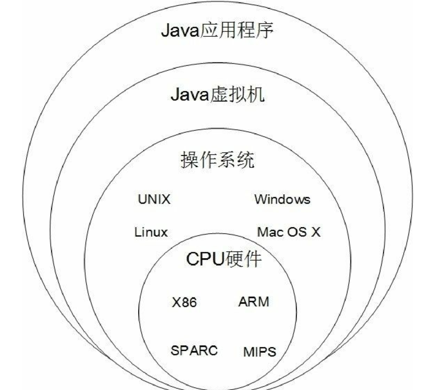
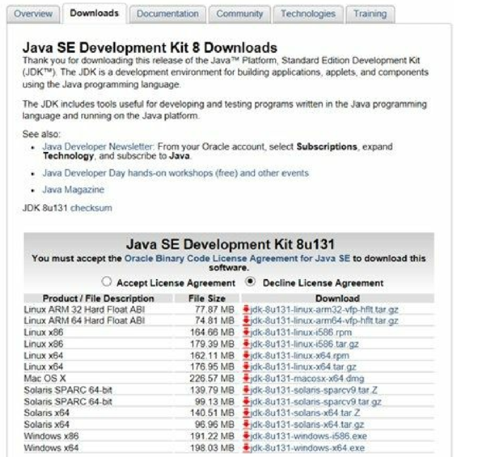
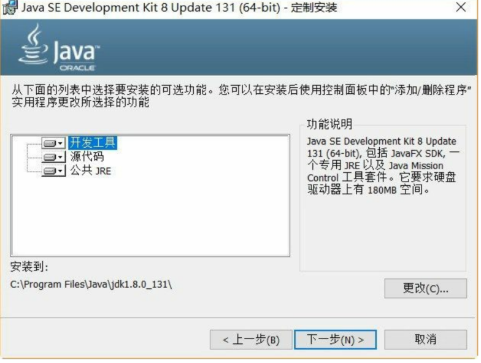
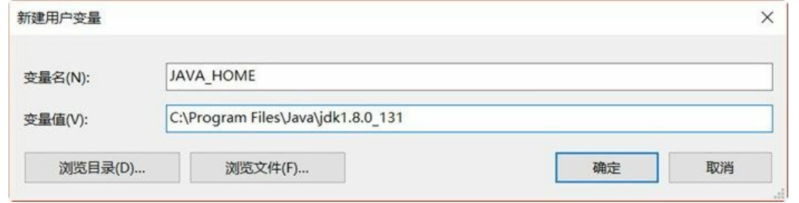
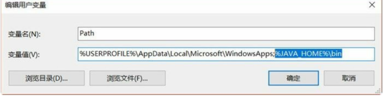
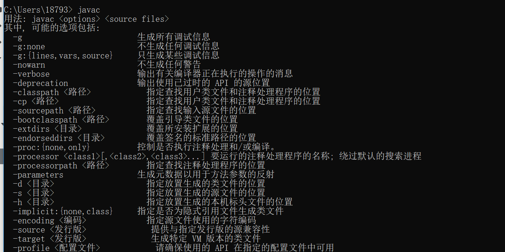

1.1. Java开篇介绍¶
1.1.1. Java语言的特点¶
01.简单
Java设计目标之一就是能够方便学习，使用简单。由于当初C++程序员很多，介绍C++语言的书籍也很多，所以Java语言的风格设计成为类似于C++语言风格，但Java摒弃了C++中容易引发程序错误的地方，如指针、内存管理、运算符重载和多继承等。一方面C++程序员可以很快迁移到Java；另一方面没有编程经验的初学者也能很快学会Java。
02.面向对象 面向对象是Java最重要的特性。Java是彻底的、纯粹的面向对象语言，在Java中“一切都是对象”。Java完全具有面向对象三个基本特性：封装、继承和多态，其中封装性实现了模块化和信息隐藏，继承性实现了代码的复用，用户可以建立自己的类库。而且Java采用的是相对简单的面向对象技术，去掉了多继承等复杂的概念，只支持单继承。
03.分布式 Java语言就是为分布式系统而设计的。JDK(Java Development Kits，Java开发工具包)中包含了支持HTTP和FTP等基于TCP/IP协议的类库。Java程序可以凭借URL打开并访问网络上的对象，其访问方式与访问本地文件系统几乎完全相同。
04.结构中立 Java程序需要在很多不同网络设备中运行，这些设备有很多不同类型的计算机和操作系统。为能够使Java程序能在网络的任何地方运行，Java编译器编译生成了与机器结构（CPU和操作系统）无关的字节码（byte-code）文件。任何种类的计算机，只要可以运行Java虚拟机，字节码文件就可以在该计算机上运行。
05.可移植 体系结构的中立也使得Java程序具有可移植性。针对不同的CPU和操作系统Java虚拟机有不同的版本，这样就可以保证相同的Java字节码文件可以移植到多个不同的平台上运行。
06.解释执行 为实现跨平台，Java设计成为解释执行的，即Java源代码文件首先被编译成为字节码文件，这些字节码本身包含了许多编译时生成的信息，在运行时候Java解释器负责将字节码文件解释成为特定的机器码进行运行。
07.健壮 Java语言是强类型语言，它在编译时进行代码检查，使得很多错误能够在编译期被发现，不至于在运行期发生而导致系统崩溃。 Java摒弃了C++中指针操作，指针是一种很多强大的技术，能够直接访问内存单元，但同时也很复杂，如果指针操控不好，会引起导致内存分配错误、内存泄漏等问题。而Java中则不会出现由指针所导致的问题。 内存管理方面C/C++等语言采用手动分配和释放，经常会导致内存泄漏，从而导致系统崩溃。而Java 采用自动内存垃圾回收机制 ，程序员不再需要管理内存，从而减少内存错误的发生，提高了程序的健壮性
08.安全 在Java程序执行过程中，类装载器负责将字节码文件加载到Java虚拟机中，这个过程中由字节码校验器检查代码中是否存在着非法操作。如果字节码校验器检验通过，由Java解释器负责把该字节码解释成为机器码进行执行，这种检查可以防止木马病毒。 另外。Java虚拟机采用的是“沙箱”运行模式，即把Java程序的代码和数据都限制在一定内存空间里执行，不允许程序访问该内存空间外的内存。
09.高性能 Java编译器在编译时对字节码会进行一些优化，使之生成高质量的代码。Java字节码格式就是针对机器码转换而设计的，实际转换时相当简便。Java在解释运行时采用一种即时编译技术，可使Java程序的执行速度提升很大。多年的发展Java虚拟机也有很多改进这都使得Java程序的执行速度提升很大。
10.多线程 Java是为网络编程而设计的，这要求Java能够并发处理多个任务。Java支持多线程编程，多线程机制可以实现并发处理多个任务，互不干涉，不会由于某一任务处于等待状态而影响了其它任务的执行，这样就可以容易的实现网络上的实时交互操作
11.动态 Java应用程序在运行过程中，可以动态的加载各种类库，即使是更新类库也不必重新编译使用这一类库的应用程序。这一特点使之非常适合于网络环境下运行，同时也非常有利于软件的开发。
1.1.2. Java平台¶
Java SE
Java SE中主要包含了：JRE（Java SE Runtime Environment，Java SE运行环境）、JDK（Java Development Kit，Java开发工具包）和Java核心类库。如果只是运行Java程序，不考虑开发Java程序，那么只安装JRE就可以了。
在JRE中包含了Java程序运行所需要的Java虚拟机（JVM，Java VirtualMachine）。JDK中包含了JRE和一些开发工具，这些工具包括：编译器、文档生成器和文件打包等工具。
Java EE
Java EE是Java Enterprise Edition，主要目的是为简化企业级系统的开发、部署和管理。Java EE是以Java SE为基础的，并提供了一套服务、API接口和协议，能够开发企业级分布式系统、Web应用程序和业务组件等，其中的包括：JSP、Servlet、EJB、JNI和Java Mail等。
Java ME
Java ME是Java Micro Edition，主要是面向消费类电子产品，为消费电子产品提供一个Java的运行平台，使得Java程序能够在手机、机顶盒、PDA等产品上运行。Java ME在早期的诺基亚塞班手机系统有很多应用，而现在的iOS和Android等智能手机中基本上没有它的用武之地。
Java虚拟机¶
Java虚拟机往上是Java应用程序，Java虚拟机屏蔽了不同软硬件平台，Java应用程序不需要修改，不需要重新编译直接可以在其他平台上运行。

Java虚拟机中包含了Java解释器，首先由编译器将Java源程序文件（.java文件）编译成为字节码文件（.class文件），然后再由Java虚拟机中的解释器将字节码解释成为机器码去执行。
java程序运行过程
开发环境搭建¶
JDK工具包
JDK工具包是最基础的Java开发工具，很多Java IDE工具，如：Eclipse、IntelliJ IDEA和NetBeans等都依赖于JDK。也有一些人使用“JDK+文本编辑工具”编写Java程序。
JDK下载和安装
截止本书编写完成为止，Oracle公司对外发布的最新JDK 8。图2-1所示是JDK 8下载界面，它的下载地址是http://www.oracle.com/technetwork/java/javase/downloads/jdk8-downloads-2133151.html。
其中有很多版本，支持的操作系统有Linux、Mac OS X 、Solaris 和Windows。注意选择对应的操作系统，以及32位还是64位安装的文件。
如果你的电脑是Windows 10 64位系统，则首先选中Accept License Agreement（同意许可协议），然后单击jdk-8u131-windows-x64.exe下载JDK文件。

下载JDK8
下载完成后就可以安装了，双击jdk-8u131-windows-x64.exe文件就可以安装了，安装过程中会弹出如图所示的内容选择对话框，其中“开发工具”是JDK内容；

“源代码”是安装Java SE源代码文件，如果安装源代码，安装完成后会见如图所示的src.zip文件就是源代码文件；公共JRE就是Java运行环境了，这里可以不安装，因为JDK文件夹中也会有一个JRE，如图所示的jre文件夹。
设置环境变量
完成之后，需要设置环境变量，主要包括：
01. JAVA_HOME环境变量，指向JDK目录，很多Java工具运行都需要的JAVA_HOME环境变量，推荐大家添加这变量。
02. 将JDK\bin目录添加到Path环境变量中，这样在任何路径下都可以执行JDK提供的工具指令。
3.测试一下环境设置是否成功。在命令提示行中输入javac指令，看是否能够找到该指令
01.单击“环境变量”按钮打开环境变量设置对话框，
可以在用户变量（上半部分，只配置当前用户）或系统变量（下半部分，配置所有用户）添加环境变量。一般情况下，在用户变量中设置环境变量
02.设置JAVA_HOME

03.添加Path变量对话框
然后追加Path环境变量，在用户变量中找到Path，双击Path弹出Path变量对话框，如下图所示，追加%JAVA_HOME%\bin。注意多个变量路径之间用“;”（分号）分隔。最后单击“确定”按钮完成设置

04.下面测试一下环境设置是否成功，可以通过在命令提示行中输入javac指令，看是否能够找到该指令。
